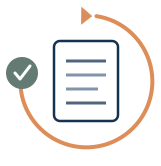

Selected Work
Explore a mix of design leadership, UX strategy, systems thinking, team enablement, and accessibility-informed work.
Highlighted Work

Associate Experience Portfolio Strategy
A portfolio strategy and support model that helped leadership prioritize accessibility risk across roughly 80 associate-experience touchpoints.

ACES Program Explorer
A scalable, interest-based program discovery experience with reusable UX components, structured content, and information architecture built around how students explore.

AI-Assisted UX Governance & Accessibility Review System
A practical prototype for using AI to support design quality, governance, and review workflows.

Accessibility Champions Program
An enablement model that gave teams local support, peer learning, and a way to make accessibility part of everyday work.
Additional Work
-
Making Personal Health Data More Accessible, Actionable, and Trustworthy
An accessibility opportunity brief exploring how the experience could better support clarity, trust, and assistive technology use.
-
University-Wide Design System, Prototypes, and Web Components
A shared design system and governance model created across a decentralized university environment.
-
Hedgerow Pottery Identity Expansion
Turning a fragile logo file into a production-ready identity system with accessible standards, flexible assets, and practical guidance.
-
Presentations & Knowledge Sharing
Selected presentations and workshops on accessibility, design systems, UX, content strategy, collaboration, and organizational enablement.
-
Housing Website Accessibility & Design Feedback
Using accessibility reviews and design feedback to improve digital experiences while building long-term accessibility awareness.